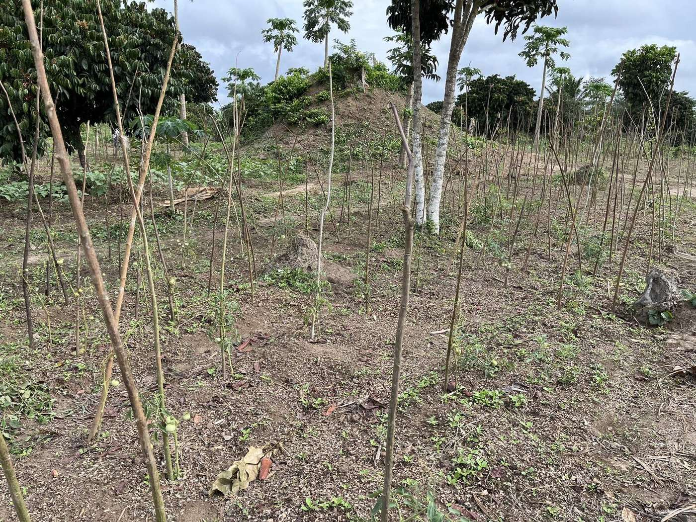

A land between two rivers.
Ibenga, Enyellé district, Likouala department, in the north of the Republic of the Congo. Where the Ibenga meets the Ubangi.
Ibenga, Enyellé, Likouala.
The estate is bordered by the Ibenga river at its confluence with the Ubangi, which marks the border with the Democratic Republic of the Congo. This is what the farm's current website says, and it is consistent with the geography of the department.relayed · to be confirmed on site
Access is by river or by road from Impfondo, the department's main town. Travel times, the passable season and exact coordinates are to be provided by the farm.
What the land gives.
Climate, soil and rainfall are to be documented with sources. Nothing is shown here that is not sourced.

Alluvial, between two rivers
Deep soil laid down by the floods. Soil analysis: [ to be provided ].

An edge that protects
Shade for the cocoa trees, bees for the apiaries, a windbreak for the rest. Woodland retained: [ to be provided ].

The river, road and border
It irrigates, it carries, it bounds. Annual rainfall: [ mm, source to be provided ].

A method, to be written with the farm.
The farm states that it grows without synthetic inputs. We write it here as the farm says it, and we will document it: fertilisation, crop protection, shade management, rotation of food crops.not verified
- Fertilisation[ to be documented ]
- Crop protection[ to be documented ]
- Shade and agroforestry[ to be documented ]
- CertificationsNone declared
A working farm means jobs that do not require leaving for Brazzaville, and skills that stay in Ibenga.
People employed and families involved: to be provided. We do not show a figure we cannot source.